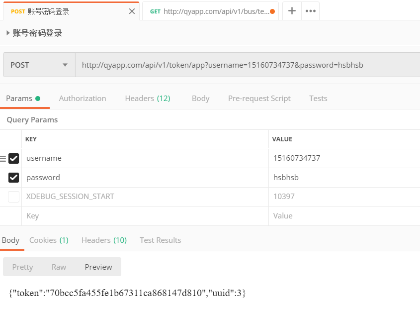
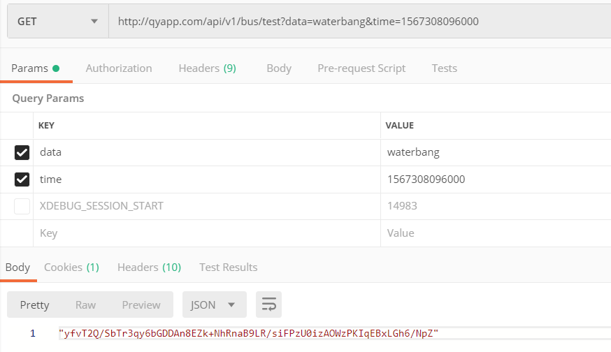
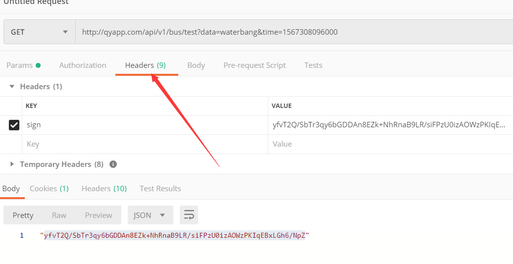

PHP-ThinkPHP5.1实现sign校验API
本文最后更新于：5 hours ago
ThinkPHP5.1实现sign校验API
本文适合有ThinkPHP经验的同学。
但是这个设计是根据用户登录产生的token加静态key作为解密的密钥，token过期时间为7200秒，增加了解密难度。
我直接写流程，加密是aes，具体往下翻，有错误请联系我😁
如果您刚从5.0升级到5.1
官方的文档写得很详细，ThinkPHP.5.1升级指导 。
1.建立sign的配置文件
进入config目录，创建aes.php,如下。(ps：在5.1版本需要在config目录配置)
return [
'aeskey'=>'这是你的key',//aes加密的密钥 客户端和服务端一致
'app_sign_time'=>7200,//sign失效时间，微信也是这时间
'app_sign_cache_time'=>20,//sign缓存的有效时间
];
当你需要使用的时候这样用
config('aes.app_sign_cache_time');
2.建立BaseController.php，这个是所有控制器的父类，继承Controller类
BaseController代码如下
/**
* @var string
*/
private $headers = '';
/**--初始化的方法 其他接口类只需要继承这个BaseController类 不需要再继承Controller
* @throws Exception
*/
public function initialize() {
$this->checkRequest();
/* } catch (Exception $e) {
return [
'code'=>1,
'message'=>$e
];
}*/
}
/** --验证数据是否合法 检查每次请求
* @throws Exception
*/
public function checkRequest(){
//首先获取header所有参数
$headers = request()->header();
//进行参数校验
if(empty($headers['sign'])){
throw new Exception('sign不存在！',1);
}
//如果sign校验不能通过
if(!IAuth::checkSignPass($headers)){
throw new Exception('sign校验失败失败！',1);
}
//sign做唯一性处理 写入Cache缓存
Cache::set($headers['sign'],1,config('aes.app_sign_cache_time'));
//赋值给类的属性
$this->headers = $headers;
}
3.创建Aes.php
在application/api/common/lib/Aes.php 创建文件，实际位置看您的情况。
代码如下
class Aes
{
private $key = null;
private $iv = null;
/**
*
* @param $key --密钥
* @return String
*/
public function __construct() {
$this->key =Cache::get('token').config('aes.aeskey');两者拼接
$this->key = hash('sha256', $this->key, true);
$this->iv = substr($this->key, 0, 16);
}
public function encrypt($input)
{
$data = openssl_encrypt($input, 'AES-256-CBC', $this->key, OPENSSL_RAW_DATA, $this->iv);
$data = base64_encode($data);
return $data;
}
public function decrypt($input)
{
$decrypted = openssl_decrypt(base64_decode($input), 'AES-256-CBC', $this->key, OPENSSL_RAW_DATA, $this->iv);
return $decrypted;
}
//增加当前时间
private function dataFiller($input){
return $input.'&time='.time();
}
}
4.创建验证授权验证规则方法
我是创建在application/api/common/lib/IAuth.php。
您可以创建在应用公共文件common下比较方便。
代码如下
/**
* @param array --检验sign是否能通过，具体规则可以自己与前端商量
* @return boolean
*/
public static function checkSignPass($data){
//解密
$str = (new Aes())->decrypt($data['sign']);
//如果解密之后为空
if(empty($str)){
return false;
}
//将$str解析成多个变量
parse_str($str,$arr);
//判断是否在有效时间内
if(time()-ceil($arr['time'] ) > config('aes.app_sign_time')){
return false;
}
//唯一性判定 如果存在 返回false
$echo = Cache::get($data['sign']);
if($echo){
return false;
}
return true;
}
这样就欧啦！
前端可以在拦截器里写加密参数的方法，所有发送的参数加上时间搓，加密后再发送。
记得前后端的密钥是一样的哦。
经过api的参数都会和时间一起被校验。
自我测试
1. BaseController的以下代码注释掉，因为我们要自我加密
$this->checkRequest();
2. 先登录一下让服务端记录token
3. 这是测试控制器里的方法，模拟前端加密
public function test($data,$time){
return (new Aes())->encrypt('data='.$data.'&time='.$time);
}
进行加密
4. 将加密获得的sign拿到header中
5.放开BaseController注释的代码
这样就能测试sign的有效性，和唯一性，api只能请求一次，第二次会抛出错误。
结束🐟
江南柳，叶小未成阴。 ——「望江南·江南柳」欧阳修
本博客所有文章除特别声明外，均采用 CC BY-SA 4.0 协议 ，转载请注明出处！